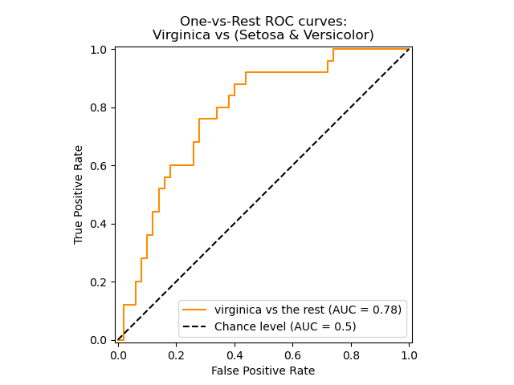
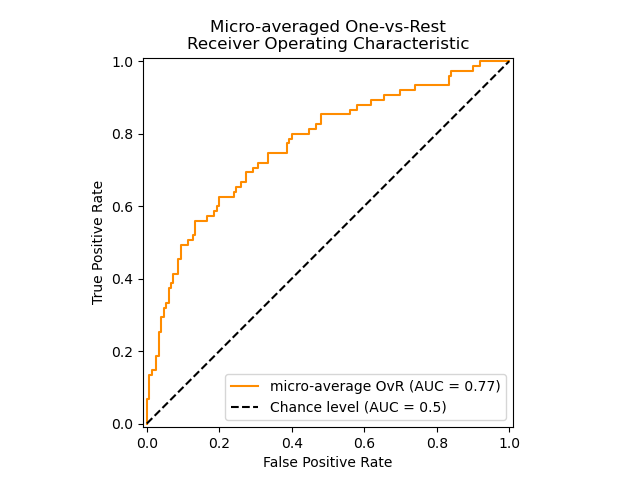
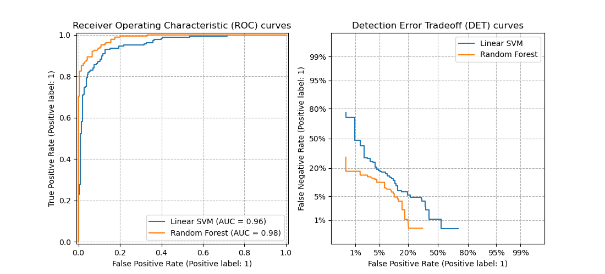

3.4. Metrics and scoring: quantifying the quality of predictions#
There are 3 different APIs for evaluating the quality of a model’s predictions:
Estimator score method: Estimators have a
scoremethod providing a default evaluation criterion for the problem they are designed to solve. This is not discussed on this page, but in each estimator’s documentation.Scoring parameter: Model-evaluation tools using cross-validation (such as
model_selection.cross_val_scoreandmodel_selection.GridSearchCV) rely on an internal scoring strategy. This is discussed in the section The scoring parameter: defining model evaluation rules.Metric functions: The
sklearn.metricsmodule implements functions assessing prediction error for specific purposes. These metrics are detailed in sections on Classification metrics, Multilabel ranking metrics, Regression metrics and Clustering metrics.
Finally, Dummy estimators are useful to get a baseline value of those metrics for random predictions.
See also
For “pairwise” metrics, between samples and not estimators or predictions, see the Pairwise metrics, Affinities and Kernels section.
3.4.1. The scoring parameter: defining model evaluation rules#
Model selection and evaluation using tools, such as
model_selection.GridSearchCV and
model_selection.cross_val_score, take a scoring parameter that
controls what metric they apply to the estimators evaluated.
3.4.1.1. Common cases: predefined values#
For the most common use cases, you can designate a scorer object with the
scoring parameter; the table below shows all possible values.
All scorer objects follow the convention that higher return values are better
than lower return values. Thus metrics which measure the distance between
the model and the data, like metrics.mean_squared_error, are
available as neg_mean_squared_error which return the negated value
of the metric.
Scoring |
Function |
Comment |
|---|---|---|
Classification |
||
‘accuracy’ |
||
‘balanced_accuracy’ |
||
‘top_k_accuracy’ |
||
‘average_precision’ |
||
‘neg_brier_score’ |
||
‘f1’ |
for binary targets |
|
‘f1_micro’ |
micro-averaged |
|
‘f1_macro’ |
macro-averaged |
|
‘f1_weighted’ |
weighted average |
|
‘f1_samples’ |
by multilabel sample |
|
‘neg_log_loss’ |
requires |
|
‘precision’ etc. |
suffixes apply as with ‘f1’ |
|
‘recall’ etc. |
suffixes apply as with ‘f1’ |
|
‘jaccard’ etc. |
suffixes apply as with ‘f1’ |
|
‘roc_auc’ |
||
‘roc_auc_ovr’ |
||
‘roc_auc_ovo’ |
||
‘roc_auc_ovr_weighted’ |
||
‘roc_auc_ovo_weighted’ |
||
‘d2_log_loss_score’ |
||
Clustering |
||
‘adjusted_mutual_info_score’ |
||
‘adjusted_rand_score’ |
||
‘completeness_score’ |
||
‘fowlkes_mallows_score’ |
||
‘homogeneity_score’ |
||
‘mutual_info_score’ |
||
‘normalized_mutual_info_score’ |
||
‘rand_score’ |
||
‘v_measure_score’ |
||
Regression |
||
‘explained_variance’ |
||
‘max_error’ |
||
‘neg_mean_absolute_error’ |
||
‘neg_mean_squared_error’ |
||
‘neg_root_mean_squared_error’ |
||
‘neg_mean_squared_log_error’ |
||
‘neg_root_mean_squared_log_error’ |
||
‘neg_median_absolute_error’ |
||
‘r2’ |
||
‘neg_mean_poisson_deviance’ |
||
‘neg_mean_gamma_deviance’ |
||
‘neg_mean_absolute_percentage_error’ |
||
‘d2_absolute_error_score’ |
Usage examples:
>>> from sklearn import svm, datasets
>>> from sklearn.model_selection import cross_val_score
>>> X, y = datasets.load_iris(return_X_y=True)
>>> clf = svm.SVC(random_state=0)
>>> cross_val_score(clf, X, y, cv=5, scoring='recall_macro')
array([0.96..., 0.96..., 0.96..., 0.93..., 1. ])
Note
If a wrong scoring name is passed, an InvalidParameterError is raised.
You can retrieve the names of all available scorers by calling
get_scorer_names.
3.4.1.2. Defining your scoring strategy from metric functions#
The following metrics functions are not implemented as named scorers,
sometimes because they require additional parameters, such as
fbeta_score. They cannot be passed to the scoring
parameters; instead their callable needs to be passed to
make_scorer together with the value of the user-settable
parameters.
Function |
Parameter |
Example usage |
|---|---|---|
Classification |
||
|
|
|
Regression |
||
|
|
|
|
|
|
|
|
|
|
|
|
One typical use case is to wrap an existing metric function from the library
with non-default values for its parameters, such as the beta parameter for
the fbeta_score function:
>>> from sklearn.metrics import fbeta_score, make_scorer
>>> ftwo_scorer = make_scorer(fbeta_score, beta=2)
>>> from sklearn.model_selection import GridSearchCV
>>> from sklearn.svm import LinearSVC
>>> grid = GridSearchCV(LinearSVC(), param_grid={'C': [1, 10]},
... scoring=ftwo_scorer, cv=5)
The module sklearn.metrics also exposes a set of simple functions
measuring a prediction error given ground truth and prediction:
functions ending with
_scorereturn a value to maximize, the higher the better.functions ending with
_error,_loss, or_deviancereturn a value to minimize, the lower the better. When converting into a scorer object usingmake_scorer, set thegreater_is_betterparameter toFalse(Trueby default; see the parameter description below).
Custom scorer objects#
The second use case is to build a completely custom scorer object
from a simple python function using make_scorer, which can
take several parameters:
the python function you want to use (
my_custom_loss_funcin the example below)whether the python function returns a score (
greater_is_better=True, the default) or a loss (greater_is_better=False). If a loss, the output of the python function is negated by the scorer object, conforming to the cross validation convention that scorers return higher values for better models.for classification metrics only: whether the python function you provided requires continuous decision certainties. If the scoring function only accepts probability estimates (e.g.
metrics.log_loss) then one needs to set the parameterresponse_method, thus in this caseresponse_method="predict_proba". Some scoring function do not necessarily require probability estimates but rather non-thresholded decision values (e.g.metrics.roc_auc_score). In this case, one provides a list such asresponse_method=["decision_function", "predict_proba"]. In this case, the scorer will use the first available method, in the order given in the list, to compute the scores.any additional parameters, such as
betaorlabelsinf1_score.
Here is an example of building custom scorers, and of using the
greater_is_better parameter:
>>> import numpy as np
>>> def my_custom_loss_func(y_true, y_pred):
... diff = np.abs(y_true - y_pred).max()
... return np.log1p(diff)
...
>>> # score will negate the return value of my_custom_loss_func,
>>> # which will be np.log(2), 0.693, given the values for X
>>> # and y defined below.
>>> score = make_scorer(my_custom_loss_func, greater_is_better=False)
>>> X = [[1], [1]]
>>> y = [0, 1]
>>> from sklearn.dummy import DummyClassifier
>>> clf = DummyClassifier(strategy='most_frequent', random_state=0)
>>> clf = clf.fit(X, y)
>>> my_custom_loss_func(y, clf.predict(X))
0.69...
>>> score(clf, X, y)
-0.69...
3.4.1.3. Implementing your own scoring object#
You can generate even more flexible model scorers by constructing your own
scoring object from scratch, without using the make_scorer factory.
How to build a scorer from scratch#
For a callable to be a scorer, it needs to meet the protocol specified by the following two rules:
It can be called with parameters
(estimator, X, y), whereestimatoris the model that should be evaluated,Xis validation data, andyis the ground truth target forX(in the supervised case) orNone(in the unsupervised case).It returns a floating point number that quantifies the
estimatorprediction quality onX, with reference toy. Again, by convention higher numbers are better, so if your scorer returns loss, that value should be negated.Advanced: If it requires extra metadata to be passed to it, it should expose a
get_metadata_routingmethod returning the requested metadata. The user should be able to set the requested metadata via aset_score_requestmethod. Please see User Guide and Developer Guide for more details.
Note
Using custom scorers in functions where n_jobs > 1
While defining the custom scoring function alongside the calling function should work out of the box with the default joblib backend (loky), importing it from another module will be a more robust approach and work independently of the joblib backend.
For example, to use n_jobs greater than 1 in the example below,
custom_scoring_function function is saved in a user-created module
(custom_scorer_module.py) and imported:
>>> from custom_scorer_module import custom_scoring_function
>>> cross_val_score(model,
... X_train,
... y_train,
... scoring=make_scorer(custom_scoring_function, greater_is_better=False),
... cv=5,
... n_jobs=-1)
3.4.1.4. Using multiple metric evaluation#
Scikit-learn also permits evaluation of multiple metrics in GridSearchCV,
RandomizedSearchCV and cross_validate.
There are three ways to specify multiple scoring metrics for the scoring
parameter:
- As an iterable of string metrics::
>>> scoring = ['accuracy', 'precision']
- As a
dictmapping the scorer name to the scoring function:: >>> from sklearn.metrics import accuracy_score >>> from sklearn.metrics import make_scorer >>> scoring = {'accuracy': make_scorer(accuracy_score), ... 'prec': 'precision'}
Note that the dict values can either be scorer functions or one of the predefined metric strings.
- As a
As a callable that returns a dictionary of scores:
>>> from sklearn.model_selection import cross_validate >>> from sklearn.metrics import confusion_matrix >>> # A sample toy binary classification dataset >>> X, y = datasets.make_classification(n_classes=2, random_state=0) >>> svm = LinearSVC(random_state=0) >>> def confusion_matrix_scorer(clf, X, y): ... y_pred = clf.predict(X) ... cm = confusion_matrix(y, y_pred) ... return {'tn': cm[0, 0], 'fp': cm[0, 1], ... 'fn': cm[1, 0], 'tp': cm[1, 1]} >>> cv_results = cross_validate(svm, X, y, cv=5, ... scoring=confusion_matrix_scorer) >>> # Getting the test set true positive scores >>> print(cv_results['test_tp']) [10 9 8 7 8] >>> # Getting the test set false negative scores >>> print(cv_results['test_fn']) [0 1 2 3 2]
3.4.2. Classification metrics#
The sklearn.metrics module implements several loss, score, and utility
functions to measure classification performance.
Some metrics might require probability estimates of the positive class,
confidence values, or binary decisions values.
Most implementations allow each sample to provide a weighted contribution
to the overall score, through the sample_weight parameter.
Some of these are restricted to the binary classification case:
|
Compute precision-recall pairs for different probability thresholds. |
|
Compute Receiver operating characteristic (ROC). |
|
Compute binary classification positive and negative likelihood ratios. |
|
Compute error rates for different probability thresholds. |
Others also work in the multiclass case:
|
Compute the balanced accuracy. |
|
Compute Cohen's kappa: a statistic that measures inter-annotator agreement. |
|
Compute confusion matrix to evaluate the accuracy of a classification. |
|
Average hinge loss (non-regularized). |
|
Compute the Matthews correlation coefficient (MCC). |
|
Compute Area Under the Receiver Operating Characteristic Curve (ROC AUC) from prediction scores. |
|
Top-k Accuracy classification score. |
Some also work in the multilabel case:
|
Accuracy classification score. |
|
Build a text report showing the main classification metrics. |
|
Compute the F1 score, also known as balanced F-score or F-measure. |
|
Compute the F-beta score. |
|
Compute the average Hamming loss. |
|
Jaccard similarity coefficient score. |
|
Log loss, aka logistic loss or cross-entropy loss. |
|
Compute a confusion matrix for each class or sample. |
|
Compute precision, recall, F-measure and support for each class. |
|
Compute the precision. |
|
Compute the recall. |
|
Compute Area Under the Receiver Operating Characteristic Curve (ROC AUC) from prediction scores. |
|
Zero-one classification loss. |
|
\(D^2\) score function, fraction of log loss explained. |
And some work with binary and multilabel (but not multiclass) problems:
|
Compute average precision (AP) from prediction scores. |
In the following sub-sections, we will describe each of those functions, preceded by some notes on common API and metric definition.
3.4.2.1. From binary to multiclass and multilabel#
Some metrics are essentially defined for binary classification tasks (e.g.
f1_score, roc_auc_score). In these cases, by default
only the positive label is evaluated, assuming by default that the positive
class is labelled 1 (though this may be configurable through the
pos_label parameter).
In extending a binary metric to multiclass or multilabel problems, the data
is treated as a collection of binary problems, one for each class.
There are then a number of ways to average binary metric calculations across
the set of classes, each of which may be useful in some scenario.
Where available, you should select among these using the average parameter.
"macro"simply calculates the mean of the binary metrics, giving equal weight to each class. In problems where infrequent classes are nonetheless important, macro-averaging may be a means of highlighting their performance. On the other hand, the assumption that all classes are equally important is often untrue, such that macro-averaging will over-emphasize the typically low performance on an infrequent class."weighted"accounts for class imbalance by computing the average of binary metrics in which each class’s score is weighted by its presence in the true data sample."micro"gives each sample-class pair an equal contribution to the overall metric (except as a result of sample-weight). Rather than summing the metric per class, this sums the dividends and divisors that make up the per-class metrics to calculate an overall quotient. Micro-averaging may be preferred in multilabel settings, including multiclass classification where a majority class is to be ignored."samples"applies only to multilabel problems. It does not calculate a per-class measure, instead calculating the metric over the true and predicted classes for each sample in the evaluation data, and returning their (sample_weight-weighted) average.Selecting
average=Nonewill return an array with the score for each class.
While multiclass data is provided to the metric, like binary targets, as an
array of class labels, multilabel data is specified as an indicator matrix,
in which cell [i, j] has value 1 if sample i has label j and value
0 otherwise.
3.4.2.2. Accuracy score#
The accuracy_score function computes the
accuracy, either the fraction
(default) or the count (normalize=False) of correct predictions.
In multilabel classification, the function returns the subset accuracy. If the entire set of predicted labels for a sample strictly match with the true set of labels, then the subset accuracy is 1.0; otherwise it is 0.0.
If \(\hat{y}_i\) is the predicted value of the \(i\)-th sample and \(y_i\) is the corresponding true value, then the fraction of correct predictions over \(n_\text{samples}\) is defined as
where \(1(x)\) is the indicator function.
>>> import numpy as np
>>> from sklearn.metrics import accuracy_score
>>> y_pred = [0, 2, 1, 3]
>>> y_true = [0, 1, 2, 3]
>>> accuracy_score(y_true, y_pred)
0.5
>>> accuracy_score(y_true, y_pred, normalize=False)
2.0
In the multilabel case with binary label indicators:
>>> accuracy_score(np.array([[0, 1], [1, 1]]), np.ones((2, 2)))
0.5
Examples
See Test with permutations the significance of a classification score for an example of accuracy score usage using permutations of the dataset.
3.4.2.3. Top-k accuracy score#
The top_k_accuracy_score function is a generalization of
accuracy_score. The difference is that a prediction is considered
correct as long as the true label is associated with one of the k highest
predicted scores. accuracy_score is the special case of k = 1.
The function covers the binary and multiclass classification cases but not the multilabel case.
If \(\hat{f}_{i,j}\) is the predicted class for the \(i\)-th sample corresponding to the \(j\)-th largest predicted score and \(y_i\) is the corresponding true value, then the fraction of correct predictions over \(n_\text{samples}\) is defined as
where \(k\) is the number of guesses allowed and \(1(x)\) is the indicator function.
>>> import numpy as np
>>> from sklearn.metrics import top_k_accuracy_score
>>> y_true = np.array([0, 1, 2, 2])
>>> y_score = np.array([[0.5, 0.2, 0.2],
... [0.3, 0.4, 0.2],
... [0.2, 0.4, 0.3],
... [0.7, 0.2, 0.1]])
>>> top_k_accuracy_score(y_true, y_score, k=2)
0.75
>>> # Not normalizing gives the number of "correctly" classified samples
>>> top_k_accuracy_score(y_true, y_score, k=2, normalize=False)
3
3.4.2.4. Balanced accuracy score#
The balanced_accuracy_score function computes the balanced accuracy, which avoids inflated
performance estimates on imbalanced datasets. It is the macro-average of recall
scores per class or, equivalently, raw accuracy where each sample is weighted
according to the inverse prevalence of its true class.
Thus for balanced datasets, the score is equal to accuracy.
In the binary case, balanced accuracy is equal to the arithmetic mean of sensitivity (true positive rate) and specificity (true negative rate), or the area under the ROC curve with binary predictions rather than scores:
If the classifier performs equally well on either class, this term reduces to the conventional accuracy (i.e., the number of correct predictions divided by the total number of predictions).
In contrast, if the conventional accuracy is above chance only because the classifier takes advantage of an imbalanced test set, then the balanced accuracy, as appropriate, will drop to \(\frac{1}{n\_classes}\).
The score ranges from 0 to 1, or when adjusted=True is used, it rescaled to
the range \(\frac{1}{1 - n\_classes}\) to 1, inclusive, with
performance at random scoring 0.
If \(y_i\) is the true value of the \(i\)-th sample, and \(w_i\) is the corresponding sample weight, then we adjust the sample weight to:
where \(1(x)\) is the indicator function. Given predicted \(\hat{y}_i\) for sample \(i\), balanced accuracy is defined as:
With adjusted=True, balanced accuracy reports the relative increase from
\(\texttt{balanced-accuracy}(y, \mathbf{0}, w) =
\frac{1}{n\_classes}\). In the binary case, this is also known as
*Youden’s J statistic*,
or informedness.
Note
The multiclass definition here seems the most reasonable extension of the metric used in binary classification, though there is no certain consensus in the literature:
Our definition: [Mosley2013], [Kelleher2015] and [Guyon2015], where [Guyon2015] adopt the adjusted version to ensure that random predictions have a score of \(0\) and perfect predictions have a score of \(1\)..
Class balanced accuracy as described in [Mosley2013]: the minimum between the precision and the recall for each class is computed. Those values are then averaged over the total number of classes to get the balanced accuracy.
Balanced Accuracy as described in [Urbanowicz2015]: the average of sensitivity and specificity is computed for each class and then averaged over total number of classes.
References
I. Guyon, K. Bennett, G. Cawley, H.J. Escalante, S. Escalera, T.K. Ho, N. Macià, B. Ray, M. Saeed, A.R. Statnikov, E. Viegas, Design of the 2015 ChaLearn AutoML Challenge, IJCNN 2015.
John. D. Kelleher, Brian Mac Namee, Aoife D’Arcy, Fundamentals of Machine Learning for Predictive Data Analytics: Algorithms, Worked Examples, and Case Studies, 2015.
Urbanowicz R.J., Moore, J.H. ExSTraCS 2.0: description and evaluation of a scalable learning classifier system, Evol. Intel. (2015) 8: 89.
3.4.2.5. Cohen’s kappa#
The function cohen_kappa_score computes Cohen’s kappa statistic.
This measure is intended to compare labelings by different human annotators,
not a classifier versus a ground truth.
The kappa score (see docstring) is a number between -1 and 1. Scores above .8 are generally considered good agreement; zero or lower means no agreement (practically random labels).
Kappa scores can be computed for binary or multiclass problems, but not for multilabel problems (except by manually computing a per-label score) and not for more than two annotators.
>>> from sklearn.metrics import cohen_kappa_score
>>> y_true = [2, 0, 2, 2, 0, 1]
>>> y_pred = [0, 0, 2, 2, 0, 2]
>>> cohen_kappa_score(y_true, y_pred)
0.4285714285714286
3.4.2.6. Confusion matrix#
The confusion_matrix function evaluates
classification accuracy by computing the confusion matrix with each row corresponding
to the true class (Wikipedia and other references may use different convention
for axes).
By definition, entry \(i, j\) in a confusion matrix is the number of observations actually in group \(i\), but predicted to be in group \(j\). Here is an example:
>>> from sklearn.metrics import confusion_matrix
>>> y_true = [2, 0, 2, 2, 0, 1]
>>> y_pred = [0, 0, 2, 2, 0, 2]
>>> confusion_matrix(y_true, y_pred)
array([[2, 0, 0],
[0, 0, 1],
[1, 0, 2]])
ConfusionMatrixDisplay can be used to visually represent a confusion
matrix as shown in the
Confusion matrix
example, which creates the following figure:
The parameter normalize allows to report ratios instead of counts. The
confusion matrix can be normalized in 3 different ways: 'pred', 'true',
and 'all' which will divide the counts by the sum of each columns, rows, or
the entire matrix, respectively.
>>> y_true = [0, 0, 0, 1, 1, 1, 1, 1]
>>> y_pred = [0, 1, 0, 1, 0, 1, 0, 1]
>>> confusion_matrix(y_true, y_pred, normalize='all')
array([[0.25 , 0.125],
[0.25 , 0.375]])
For binary problems, we can get counts of true negatives, false positives, false negatives and true positives as follows:
>>> y_true = [0, 0, 0, 1, 1, 1, 1, 1]
>>> y_pred = [0, 1, 0, 1, 0, 1, 0, 1]
>>> tn, fp, fn, tp = confusion_matrix(y_true, y_pred).ravel()
>>> tn, fp, fn, tp
(2, 1, 2, 3)
Examples
See Confusion matrix for an example of using a confusion matrix to evaluate classifier output quality.
See Recognizing hand-written digits for an example of using a confusion matrix to classify hand-written digits.
See Classification of text documents using sparse features for an example of using a confusion matrix to classify text documents.
3.4.2.7. Classification report#
The classification_report function builds a text report showing the
main classification metrics. Here is a small example with custom target_names
and inferred labels:
>>> from sklearn.metrics import classification_report
>>> y_true = [0, 1, 2, 2, 0]
>>> y_pred = [0, 0, 2, 1, 0]
>>> target_names = ['class 0', 'class 1', 'class 2']
>>> print(classification_report(y_true, y_pred, target_names=target_names))
precision recall f1-score support
class 0 0.67 1.00 0.80 2
class 1 0.00 0.00 0.00 1
class 2 1.00 0.50 0.67 2
accuracy 0.60 5
macro avg 0.56 0.50 0.49 5
weighted avg 0.67 0.60 0.59 5
Examples
See Recognizing hand-written digits for an example of classification report usage for hand-written digits.
See Custom refit strategy of a grid search with cross-validation for an example of classification report usage for grid search with nested cross-validation.
3.4.2.8. Hamming loss#
The hamming_loss computes the average Hamming loss or Hamming
distance between two sets
of samples.
If \(\hat{y}_{i,j}\) is the predicted value for the \(j\)-th label of a given sample \(i\), \(y_{i,j}\) is the corresponding true value, \(n_\text{samples}\) is the number of samples and \(n_\text{labels}\) is the number of labels, then the Hamming loss \(L_{Hamming}\) is defined as:
where \(1(x)\) is the indicator function.
The equation above does not hold true in the case of multiclass classification. Please refer to the note below for more information.
>>> from sklearn.metrics import hamming_loss
>>> y_pred = [1, 2, 3, 4]
>>> y_true = [2, 2, 3, 4]
>>> hamming_loss(y_true, y_pred)
0.25
In the multilabel case with binary label indicators:
>>> hamming_loss(np.array([[0, 1], [1, 1]]), np.zeros((2, 2)))
0.75
Note
In multiclass classification, the Hamming loss corresponds to the Hamming
distance between y_true and y_pred which is similar to the
Zero one loss function. However, while zero-one loss penalizes
prediction sets that do not strictly match true sets, the Hamming loss
penalizes individual labels. Thus the Hamming loss, upper bounded by the zero-one
loss, is always between zero and one, inclusive; and predicting a proper subset
or superset of the true labels will give a Hamming loss between
zero and one, exclusive.
3.4.2.9. Precision, recall and F-measures#
Intuitively, precision is the ability of the classifier not to label as positive a sample that is negative, and recall is the ability of the classifier to find all the positive samples.
The F-measure (\(F_\beta\) and \(F_1\) measures) can be interpreted as a weighted harmonic mean of the precision and recall. A \(F_\beta\) measure reaches its best value at 1 and its worst score at 0. With \(\beta = 1\), \(F_\beta\) and \(F_1\) are equivalent, and the recall and the precision are equally important.
The precision_recall_curve computes a precision-recall curve
from the ground truth label and a score given by the classifier
by varying a decision threshold.
The average_precision_score function computes the
average precision
(AP) from prediction scores. The value is between 0 and 1 and higher is better.
AP is defined as
where \(P_n\) and \(R_n\) are the precision and recall at the nth threshold. With random predictions, the AP is the fraction of positive samples.
References [Manning2008] and [Everingham2010] present alternative variants of
AP that interpolate the precision-recall curve. Currently,
average_precision_score does not implement any interpolated variant.
References [Davis2006] and [Flach2015] describe why a linear interpolation of
points on the precision-recall curve provides an overly-optimistic measure of
classifier performance. This linear interpolation is used when computing area
under the curve with the trapezoidal rule in auc.
Several functions allow you to analyze the precision, recall and F-measures score:
|
Compute average precision (AP) from prediction scores. |
|
Compute the F1 score, also known as balanced F-score or F-measure. |
|
Compute the F-beta score. |
|
Compute precision-recall pairs for different probability thresholds. |
|
Compute precision, recall, F-measure and support for each class. |
|
Compute the precision. |
|
Compute the recall. |
Note that the precision_recall_curve function is restricted to the
binary case. The average_precision_score function supports multiclass
and multilabel formats by computing each class score in a One-vs-the-rest (OvR)
fashion and averaging them or not depending of its average argument value.
The PrecisionRecallDisplay.from_estimator and
PrecisionRecallDisplay.from_predictions functions will plot the
precision-recall curve as follows.
Examples
See Custom refit strategy of a grid search with cross-validation for an example of
precision_scoreandrecall_scoreusage to estimate parameters using grid search with nested cross-validation.See Precision-Recall for an example of
precision_recall_curveusage to evaluate classifier output quality.
References
C.D. Manning, P. Raghavan, H. Schütze, Introduction to Information Retrieval, 2008.
M. Everingham, L. Van Gool, C.K.I. Williams, J. Winn, A. Zisserman, The Pascal Visual Object Classes (VOC) Challenge, IJCV 2010.
J. Davis, M. Goadrich, The Relationship Between Precision-Recall and ROC Curves, ICML 2006.
P.A. Flach, M. Kull, Precision-Recall-Gain Curves: PR Analysis Done Right, NIPS 2015.
3.4.2.9.1. Binary classification#
In a binary classification task, the terms ‘’positive’’ and ‘’negative’’ refer to the classifier’s prediction, and the terms ‘’true’’ and ‘’false’’ refer to whether that prediction corresponds to the external judgment (sometimes known as the ‘’observation’’). Given these definitions, we can formulate the following table:
Actual class (observation) |
||
Predicted class (expectation) |
tp (true positive) Correct result |
fp (false positive) Unexpected result |
fn (false negative) Missing result |
tn (true negative) Correct absence of result |
|
In this context, we can define the notions of precision and recall:
(Sometimes recall is also called ‘’sensitivity’’)
F-measure is the weighted harmonic mean of precision and recall, with precision’s contribution to the mean weighted by some parameter \(\beta\):
To avoid division by zero when precision and recall are zero, Scikit-Learn calculates F-measure with this otherwise-equivalent formula:
Note that this formula is still undefined when there are no true positives, false
positives, or false negatives. By default, F-1 for a set of exclusively true negatives
is calculated as 0, however this behavior can be changed using the zero_division
parameter.
Here are some small examples in binary classification:
>>> from sklearn import metrics
>>> y_pred = [0, 1, 0, 0]
>>> y_true = [0, 1, 0, 1]
>>> metrics.precision_score(y_true, y_pred)
1.0
>>> metrics.recall_score(y_true, y_pred)
0.5
>>> metrics.f1_score(y_true, y_pred)
0.66...
>>> metrics.fbeta_score(y_true, y_pred, beta=0.5)
0.83...
>>> metrics.fbeta_score(y_true, y_pred, beta=1)
0.66...
>>> metrics.fbeta_score(y_true, y_pred, beta=2)
0.55...
>>> metrics.precision_recall_fscore_support(y_true, y_pred, beta=0.5)
(array([0.66..., 1. ]), array([1. , 0.5]), array([0.71..., 0.83...]), array([2, 2]))
>>> import numpy as np
>>> from sklearn.metrics import precision_recall_curve
>>> from sklearn.metrics import average_precision_score
>>> y_true = np.array([0, 0, 1, 1])
>>> y_scores = np.array([0.1, 0.4, 0.35, 0.8])
>>> precision, recall, threshold = precision_recall_curve(y_true, y_scores)
>>> precision
array([0.5 , 0.66..., 0.5 , 1. , 1. ])
>>> recall
array([1. , 1. , 0.5, 0.5, 0. ])
>>> threshold
array([0.1 , 0.35, 0.4 , 0.8 ])
>>> average_precision_score(y_true, y_scores)
0.83...
3.4.2.9.2. Multiclass and multilabel classification#
In a multiclass and multilabel classification task, the notions of precision,
recall, and F-measures can be applied to each label independently.
There are a few ways to combine results across labels,
specified by the average argument to the
average_precision_score, f1_score,
fbeta_score, precision_recall_fscore_support,
precision_score and recall_score functions, as described
above.
Note the following behaviors when averaging:
If all labels are included, “micro”-averaging in a multiclass setting will produce precision, recall and \(F\) that are all identical to accuracy.
“weighted” averaging may produce a F-score that is not between precision and recall.
“macro” averaging for F-measures is calculated as the arithmetic mean over per-label/class F-measures, not the harmonic mean over the arithmetic precision and recall means. Both calculations can be seen in the literature but are not equivalent, see [OB2019] for details.
To make this more explicit, consider the following notation:
\(y\) the set of true \((sample, label)\) pairs
\(\hat{y}\) the set of predicted \((sample, label)\) pairs
\(L\) the set of labels
\(S\) the set of samples
\(y_s\) the subset of \(y\) with sample \(s\), i.e. \(y_s := \left\{(s', l) \in y | s' = s\right\}\)
\(y_l\) the subset of \(y\) with label \(l\)
similarly, \(\hat{y}_s\) and \(\hat{y}_l\) are subsets of \(\hat{y}\)
\(P(A, B) := \frac{\left| A \cap B \right|}{\left|B\right|}\) for some sets \(A\) and \(B\)
\(R(A, B) := \frac{\left| A \cap B \right|}{\left|A\right|}\) (Conventions vary on handling \(A = \emptyset\); this implementation uses \(R(A, B):=0\), and similar for \(P\).)
\(F_\beta(A, B) := \left(1 + \beta^2\right) \frac{P(A, B) \times R(A, B)}{\beta^2 P(A, B) + R(A, B)}\)
Then the metrics are defined as:
|
Precision |
Recall |
F_beta |
|---|---|---|---|
|
\(P(y, \hat{y})\) |
\(R(y, \hat{y})\) |
\(F_\beta(y, \hat{y})\) |
|
\(\frac{1}{\left|S\right|} \sum_{s \in S} P(y_s, \hat{y}_s)\) |
\(\frac{1}{\left|S\right|} \sum_{s \in S} R(y_s, \hat{y}_s)\) |
\(\frac{1}{\left|S\right|} \sum_{s \in S} F_\beta(y_s, \hat{y}_s)\) |
|
\(\frac{1}{\left|L\right|} \sum_{l \in L} P(y_l, \hat{y}_l)\) |
\(\frac{1}{\left|L\right|} \sum_{l \in L} R(y_l, \hat{y}_l)\) |
\(\frac{1}{\left|L\right|} \sum_{l \in L} F_\beta(y_l, \hat{y}_l)\) |
|
\(\frac{1}{\sum_{l \in L} \left|y_l\right|} \sum_{l \in L} \left|y_l\right| P(y_l, \hat{y}_l)\) |
\(\frac{1}{\sum_{l \in L} \left|y_l\right|} \sum_{l \in L} \left|y_l\right| R(y_l, \hat{y}_l)\) |
\(\frac{1}{\sum_{l \in L} \left|y_l\right|} \sum_{l \in L} \left|y_l\right| F_\beta(y_l, \hat{y}_l)\) |
|
\(\langle P(y_l, \hat{y}_l) | l \in L \rangle\) |
\(\langle R(y_l, \hat{y}_l) | l \in L \rangle\) |
\(\langle F_\beta(y_l, \hat{y}_l) | l \in L \rangle\) |
>>> from sklearn import metrics
>>> y_true = [0, 1, 2, 0, 1, 2]
>>> y_pred = [0, 2, 1, 0, 0, 1]
>>> metrics.precision_score(y_true, y_pred, average='macro')
0.22...
>>> metrics.recall_score(y_true, y_pred, average='micro')
0.33...
>>> metrics.f1_score(y_true, y_pred, average='weighted')
0.26...
>>> metrics.fbeta_score(y_true, y_pred, average='macro', beta=0.5)
0.23...
>>> metrics.precision_recall_fscore_support(y_true, y_pred, beta=0.5, average=None)
(array([0.66..., 0. , 0. ]), array([1., 0., 0.]), array([0.71..., 0. , 0. ]), array([2, 2, 2]...))
For multiclass classification with a “negative class”, it is possible to exclude some labels:
>>> metrics.recall_score(y_true, y_pred, labels=[1, 2], average='micro')
... # excluding 0, no labels were correctly recalled
0.0
Similarly, labels not present in the data sample may be accounted for in macro-averaging.
>>> metrics.precision_score(y_true, y_pred, labels=[0, 1, 2, 3], average='macro')
0.166...
References
3.4.2.10. Jaccard similarity coefficient score#
The jaccard_score function computes the average of Jaccard similarity
coefficients, also called the
Jaccard index, between pairs of label sets.
The Jaccard similarity coefficient with a ground truth label set \(y\) and predicted label set \(\hat{y}\), is defined as
The jaccard_score (like precision_recall_fscore_support) applies
natively to binary targets. By computing it set-wise it can be extended to apply
to multilabel and multiclass through the use of average (see
above).
In the binary case:
>>> import numpy as np
>>> from sklearn.metrics import jaccard_score
>>> y_true = np.array([[0, 1, 1],
... [1, 1, 0]])
>>> y_pred = np.array([[1, 1, 1],
... [1, 0, 0]])
>>> jaccard_score(y_true[0], y_pred[0])
0.6666...
In the 2D comparison case (e.g. image similarity):
>>> jaccard_score(y_true, y_pred, average="micro")
0.6
In the multilabel case with binary label indicators:
>>> jaccard_score(y_true, y_pred, average='samples')
0.5833...
>>> jaccard_score(y_true, y_pred, average='macro')
0.6666...
>>> jaccard_score(y_true, y_pred, average=None)
array([0.5, 0.5, 1. ])
Multiclass problems are binarized and treated like the corresponding multilabel problem:
>>> y_pred = [0, 2, 1, 2]
>>> y_true = [0, 1, 2, 2]
>>> jaccard_score(y_true, y_pred, average=None)
array([1. , 0. , 0.33...])
>>> jaccard_score(y_true, y_pred, average='macro')
0.44...
>>> jaccard_score(y_true, y_pred, average='micro')
0.33...
3.4.2.11. Hinge loss#
The hinge_loss function computes the average distance between
the model and the data using
hinge loss, a one-sided metric
that considers only prediction errors. (Hinge
loss is used in maximal margin classifiers such as support vector machines.)
If the true label \(y_i\) of a binary classification task is encoded as
\(y_i=\left\{-1, +1\right\}\) for every sample \(i\); and \(w_i\)
is the corresponding predicted decision (an array of shape (n_samples,) as
output by the decision_function method), then the hinge loss is defined as:
If there are more than two labels, hinge_loss uses a multiclass variant
due to Crammer & Singer.
Here is
the paper describing it.
In this case the predicted decision is an array of shape (n_samples,
n_labels). If \(w_{i, y_i}\) is the predicted decision for the true label
\(y_i\) of the \(i\)-th sample; and
\(\hat{w}_{i, y_i} = \max\left\{w_{i, y_j}~|~y_j \ne y_i \right\}\)
is the maximum of the
predicted decisions for all the other labels, then the multi-class hinge loss
is defined by:
Here is a small example demonstrating the use of the hinge_loss function
with a svm classifier in a binary class problem:
>>> from sklearn import svm
>>> from sklearn.metrics import hinge_loss
>>> X = [[0], [1]]
>>> y = [-1, 1]
>>> est = svm.LinearSVC(random_state=0)
>>> est.fit(X, y)
LinearSVC(random_state=0)
>>> pred_decision = est.decision_function([[-2], [3], [0.5]])
>>> pred_decision
array([-2.18..., 2.36..., 0.09...])
>>> hinge_loss([-1, 1, 1], pred_decision)
0.3...
Here is an example demonstrating the use of the hinge_loss function
with a svm classifier in a multiclass problem:
>>> X = np.array([[0], [1], [2], [3]])
>>> Y = np.array([0, 1, 2, 3])
>>> labels = np.array([0, 1, 2, 3])
>>> est = svm.LinearSVC()
>>> est.fit(X, Y)
LinearSVC()
>>> pred_decision = est.decision_function([[-1], [2], [3]])
>>> y_true = [0, 2, 3]
>>> hinge_loss(y_true, pred_decision, labels=labels)
0.56...
3.4.2.12. Log loss#
Log loss, also called logistic regression loss or
cross-entropy loss, is defined on probability estimates. It is
commonly used in (multinomial) logistic regression and neural networks, as well
as in some variants of expectation-maximization, and can be used to evaluate the
probability outputs (predict_proba) of a classifier instead of its
discrete predictions.
For binary classification with a true label \(y \in \{0,1\}\) and a probability estimate \(p = \operatorname{Pr}(y = 1)\), the log loss per sample is the negative log-likelihood of the classifier given the true label:
This extends to the multiclass case as follows. Let the true labels for a set of samples be encoded as a 1-of-K binary indicator matrix \(Y\), i.e., \(y_{i,k} = 1\) if sample \(i\) has label \(k\) taken from a set of \(K\) labels. Let \(P\) be a matrix of probability estimates, with \(p_{i,k} = \operatorname{Pr}(y_{i,k} = 1)\). Then the log loss of the whole set is
To see how this generalizes the binary log loss given above, note that in the binary case, \(p_{i,0} = 1 - p_{i,1}\) and \(y_{i,0} = 1 - y_{i,1}\), so expanding the inner sum over \(y_{i,k} \in \{0,1\}\) gives the binary log loss.
The log_loss function computes log loss given a list of ground-truth
labels and a probability matrix, as returned by an estimator’s predict_proba
method.
>>> from sklearn.metrics import log_loss
>>> y_true = [0, 0, 1, 1]
>>> y_pred = [[.9, .1], [.8, .2], [.3, .7], [.01, .99]]
>>> log_loss(y_true, y_pred)
0.1738...
The first [.9, .1] in y_pred denotes 90% probability that the first
sample has label 0. The log loss is non-negative.
3.4.2.13. Matthews correlation coefficient#
The matthews_corrcoef function computes the
Matthew’s correlation coefficient (MCC)
for binary classes. Quoting Wikipedia:
“The Matthews correlation coefficient is used in machine learning as a measure of the quality of binary (two-class) classifications. It takes into account true and false positives and negatives and is generally regarded as a balanced measure which can be used even if the classes are of very different sizes. The MCC is in essence a correlation coefficient value between -1 and +1. A coefficient of +1 represents a perfect prediction, 0 an average random prediction and -1 an inverse prediction. The statistic is also known as the phi coefficient.”
In the binary (two-class) case, \(tp\), \(tn\), \(fp\) and \(fn\) are respectively the number of true positives, true negatives, false positives and false negatives, the MCC is defined as
In the multiclass case, the Matthews correlation coefficient can be defined in terms of a
confusion_matrix \(C\) for \(K\) classes. To simplify the
definition consider the following intermediate variables:
\(t_k=\sum_{i}^{K} C_{ik}\) the number of times class \(k\) truly occurred,
\(p_k=\sum_{i}^{K} C_{ki}\) the number of times class \(k\) was predicted,
\(c=\sum_{k}^{K} C_{kk}\) the total number of samples correctly predicted,
\(s=\sum_{i}^{K} \sum_{j}^{K} C_{ij}\) the total number of samples.
Then the multiclass MCC is defined as:
When there are more than two labels, the value of the MCC will no longer range between -1 and +1. Instead the minimum value will be somewhere between -1 and 0 depending on the number and distribution of ground true labels. The maximum value is always +1. For additional information, see [WikipediaMCC2021].
Here is a small example illustrating the usage of the matthews_corrcoef
function:
>>> from sklearn.metrics import matthews_corrcoef
>>> y_true = [+1, +1, +1, -1]
>>> y_pred = [+1, -1, +1, +1]
>>> matthews_corrcoef(y_true, y_pred)
-0.33...
3.4.2.14. Multi-label confusion matrix#
The multilabel_confusion_matrix function computes class-wise (default)
or sample-wise (samplewise=True) multilabel confusion matrix to evaluate
the accuracy of a classification. multilabel_confusion_matrix also treats
multiclass data as if it were multilabel, as this is a transformation commonly
applied to evaluate multiclass problems with binary classification metrics
(such as precision, recall, etc.).
When calculating class-wise multilabel confusion matrix \(C\), the count of true negatives for class \(i\) is \(C_{i,0,0}\), false negatives is \(C_{i,1,0}\), true positives is \(C_{i,1,1}\) and false positives is \(C_{i,0,1}\).
Here is an example demonstrating the use of the
multilabel_confusion_matrix function with
multilabel indicator matrix input:
>>> import numpy as np
>>> from sklearn.metrics import multilabel_confusion_matrix
>>> y_true = np.array([[1, 0, 1],
... [0, 1, 0]])
>>> y_pred = np.array([[1, 0, 0],
... [0, 1, 1]])
>>> multilabel_confusion_matrix(y_true, y_pred)
array([[[1, 0],
[0, 1]],
[[1, 0],
[0, 1]],
[[0, 1],
[1, 0]]])
Or a confusion matrix can be constructed for each sample’s labels:
>>> multilabel_confusion_matrix(y_true, y_pred, samplewise=True)
array([[[1, 0],
[1, 1]],
[[1, 1],
[0, 1]]])
Here is an example demonstrating the use of the
multilabel_confusion_matrix function with
multiclass input:
>>> y_true = ["cat", "ant", "cat", "cat", "ant", "bird"]
>>> y_pred = ["ant", "ant", "cat", "cat", "ant", "cat"]
>>> multilabel_confusion_matrix(y_true, y_pred,
... labels=["ant", "bird", "cat"])
array([[[3, 1],
[0, 2]],
[[5, 0],
[1, 0]],
[[2, 1],
[1, 2]]])
Here are some examples demonstrating the use of the
multilabel_confusion_matrix function to calculate recall
(or sensitivity), specificity, fall out and miss rate for each class in a
problem with multilabel indicator matrix input.
Calculating recall (also called the true positive rate or the sensitivity) for each class:
>>> y_true = np.array([[0, 0, 1],
... [0, 1, 0],
... [1, 1, 0]])
>>> y_pred = np.array([[0, 1, 0],
... [0, 0, 1],
... [1, 1, 0]])
>>> mcm = multilabel_confusion_matrix(y_true, y_pred)
>>> tn = mcm[:, 0, 0]
>>> tp = mcm[:, 1, 1]
>>> fn = mcm[:, 1, 0]
>>> fp = mcm[:, 0, 1]
>>> tp / (tp + fn)
array([1. , 0.5, 0. ])
Calculating specificity (also called the true negative rate) for each class:
>>> tn / (tn + fp)
array([1. , 0. , 0.5])
Calculating fall out (also called the false positive rate) for each class:
>>> fp / (fp + tn)
array([0. , 1. , 0.5])
Calculating miss rate (also called the false negative rate) for each class:
>>> fn / (fn + tp)
array([0. , 0.5, 1. ])
3.4.2.15. Receiver operating characteristic (ROC)#
The function roc_curve computes the
receiver operating characteristic curve, or ROC curve.
Quoting Wikipedia :
“A receiver operating characteristic (ROC), or simply ROC curve, is a graphical plot which illustrates the performance of a binary classifier system as its discrimination threshold is varied. It is created by plotting the fraction of true positives out of the positives (TPR = true positive rate) vs. the fraction of false positives out of the negatives (FPR = false positive rate), at various threshold settings. TPR is also known as sensitivity, and FPR is one minus the specificity or true negative rate.”
This function requires the true binary value and the target scores, which can
either be probability estimates of the positive class, confidence values, or
binary decisions. Here is a small example of how to use the roc_curve
function:
>>> import numpy as np
>>> from sklearn.metrics import roc_curve
>>> y = np.array([1, 1, 2, 2])
>>> scores = np.array([0.1, 0.4, 0.35, 0.8])
>>> fpr, tpr, thresholds = roc_curve(y, scores, pos_label=2)
>>> fpr
array([0. , 0. , 0.5, 0.5, 1. ])
>>> tpr
array([0. , 0.5, 0.5, 1. , 1. ])
>>> thresholds
array([ inf, 0.8 , 0.4 , 0.35, 0.1 ])
Compared to metrics such as the subset accuracy, the Hamming loss, or the F1 score, ROC doesn’t require optimizing a threshold for each label.
The roc_auc_score function, denoted by ROC-AUC or AUROC, computes the
area under the ROC curve. By doing so, the curve information is summarized in
one number.
The following figure shows the ROC curve and ROC-AUC score for a classifier aimed to distinguish the virginica flower from the rest of the species in the Iris plants dataset:
For more information see the Wikipedia article on AUC.
3.4.2.15.1. Binary case#
In the binary case, you can either provide the probability estimates, using
the classifier.predict_proba() method, or the non-thresholded decision values
given by the classifier.decision_function() method. In the case of providing
the probability estimates, the probability of the class with the
“greater label” should be provided. The “greater label” corresponds to
classifier.classes_[1] and thus classifier.predict_proba(X)[:, 1].
Therefore, the y_score parameter is of size (n_samples,).
>>> from sklearn.datasets import load_breast_cancer
>>> from sklearn.linear_model import LogisticRegression
>>> from sklearn.metrics import roc_auc_score
>>> X, y = load_breast_cancer(return_X_y=True)
>>> clf = LogisticRegression(solver="liblinear").fit(X, y)
>>> clf.classes_
array([0, 1])
We can use the probability estimates corresponding to clf.classes_[1].
>>> y_score = clf.predict_proba(X)[:, 1]
>>> roc_auc_score(y, y_score)
0.99...
Otherwise, we can use the non-thresholded decision values
>>> roc_auc_score(y, clf.decision_function(X))
0.99...
3.4.2.15.2. Multi-class case#
The roc_auc_score function can also be used in multi-class
classification. Two averaging strategies are currently supported: the
one-vs-one algorithm computes the average of the pairwise ROC AUC scores, and
the one-vs-rest algorithm computes the average of the ROC AUC scores for each
class against all other classes. In both cases, the predicted labels are
provided in an array with values from 0 to n_classes, and the scores
correspond to the probability estimates that a sample belongs to a particular
class. The OvO and OvR algorithms support weighting uniformly
(average='macro') and by prevalence (average='weighted').
One-vs-one Algorithm#
Computes the average AUC of all possible pairwise combinations of classes. [HT2001] defines a multiclass AUC metric weighted uniformly:
where \(c\) is the number of classes and \(\text{AUC}(j | k)\) is the
AUC with class \(j\) as the positive class and class \(k\) as the
negative class. In general,
\(\text{AUC}(j | k) \neq \text{AUC}(k | j))\) in the multiclass
case. This algorithm is used by setting the keyword argument multiclass
to 'ovo' and average to 'macro'.
The [HT2001] multiclass AUC metric can be extended to be weighted by the prevalence:
where \(c\) is the number of classes. This algorithm is used by setting
the keyword argument multiclass to 'ovo' and average to
'weighted'. The 'weighted' option returns a prevalence-weighted average
as described in [FC2009].
One-vs-rest Algorithm#
Computes the AUC of each class against the rest
[PD2000]. The algorithm is functionally the same as the multilabel case. To
enable this algorithm set the keyword argument multiclass to 'ovr'.
Additionally to 'macro' [F2006] and 'weighted' [F2001] averaging, OvR
supports 'micro' averaging.
In applications where a high false positive rate is not tolerable the parameter
max_fpr of roc_auc_score can be used to summarize the ROC curve up
to the given limit.
The following figure shows the micro-averaged ROC curve and its corresponding ROC-AUC score for a classifier aimed to distinguish the different species in the Iris plants dataset:
3.4.2.15.3. Multi-label case#
In multi-label classification, the roc_auc_score function is
extended by averaging over the labels as above. In this case,
you should provide a y_score of shape (n_samples, n_classes). Thus, when
using the probability estimates, one needs to select the probability of the
class with the greater label for each output.
>>> from sklearn.datasets import make_multilabel_classification
>>> from sklearn.multioutput import MultiOutputClassifier
>>> X, y = make_multilabel_classification(random_state=0)
>>> inner_clf = LogisticRegression(solver="liblinear", random_state=0)
>>> clf = MultiOutputClassifier(inner_clf).fit(X, y)
>>> y_score = np.transpose([y_pred[:, 1] for y_pred in clf.predict_proba(X)])
>>> roc_auc_score(y, y_score, average=None)
array([0.82..., 0.86..., 0.94..., 0.85... , 0.94...])
And the decision values do not require such processing.
>>> from sklearn.linear_model import RidgeClassifierCV
>>> clf = RidgeClassifierCV().fit(X, y)
>>> y_score = clf.decision_function(X)
>>> roc_auc_score(y, y_score, average=None)
array([0.81..., 0.84... , 0.93..., 0.87..., 0.94...])
Examples
See Multiclass Receiver Operating Characteristic (ROC) for an example of using ROC to evaluate the quality of the output of a classifier.
See Receiver Operating Characteristic (ROC) with cross validation for an example of using ROC to evaluate classifier output quality, using cross-validation.
See Species distribution modeling for an example of using ROC to model species distribution.
References
Hand, D.J. and Till, R.J., (2001). A simple generalisation of the area under the ROC curve for multiple class classification problems. Machine learning, 45(2), pp. 171-186.
Ferri, Cèsar & Hernandez-Orallo, Jose & Modroiu, R. (2009). An Experimental Comparison of Performance Measures for Classification. Pattern Recognition Letters. 30. 27-38.
Provost, F., Domingos, P. (2000). Well-trained PETs: Improving probability estimation trees (Section 6.2), CeDER Working Paper #IS-00-04, Stern School of Business, New York University.
Fawcett, T., 2006. An introduction to ROC analysis. Pattern Recognition Letters, 27(8), pp. 861-874.
Fawcett, T., 2001. Using rule sets to maximize ROC performance In Data Mining, 2001. Proceedings IEEE International Conference, pp. 131-138.
3.4.2.16. Detection error tradeoff (DET)#
The function det_curve computes the
detection error tradeoff curve (DET) curve [WikipediaDET2017].
Quoting Wikipedia:
“A detection error tradeoff (DET) graph is a graphical plot of error rates for binary classification systems, plotting false reject rate vs. false accept rate. The x- and y-axes are scaled non-linearly by their standard normal deviates (or just by logarithmic transformation), yielding tradeoff curves that are more linear than ROC curves, and use most of the image area to highlight the differences of importance in the critical operating region.”
DET curves are a variation of receiver operating characteristic (ROC) curves where False Negative Rate is plotted on the y-axis instead of True Positive Rate. DET curves are commonly plotted in normal deviate scale by transformation with \(\phi^{-1}\) (with \(\phi\) being the cumulative distribution function). The resulting performance curves explicitly visualize the tradeoff of error types for given classification algorithms. See [Martin1997] for examples and further motivation.
This figure compares the ROC and DET curves of two example classifiers on the same classification task:
Properties#
DET curves form a linear curve in normal deviate scale if the detection scores are normally (or close-to normally) distributed. It was shown by [Navratil2007] that the reverse is not necessarily true and even more general distributions are able to produce linear DET curves.
The normal deviate scale transformation spreads out the points such that a comparatively larger space of plot is occupied. Therefore curves with similar classification performance might be easier to distinguish on a DET plot.
With False Negative Rate being “inverse” to True Positive Rate the point of perfection for DET curves is the origin (in contrast to the top left corner for ROC curves).
Applications and limitations#
DET curves are intuitive to read and hence allow quick visual assessment of a classifier’s performance. Additionally DET curves can be consulted for threshold analysis and operating point selection. This is particularly helpful if a comparison of error types is required.
On the other hand DET curves do not provide their metric as a single number. Therefore for either automated evaluation or comparison to other classification tasks metrics like the derived area under ROC curve might be better suited.
Examples
See Detection error tradeoff (DET) curve for an example comparison between receiver operating characteristic (ROC) curves and Detection error tradeoff (DET) curves.
References
Wikipedia contributors. Detection error tradeoff. Wikipedia, The Free Encyclopedia. September 4, 2017, 23:33 UTC. Available at: https://en.wikipedia.org/w/index.php?title=Detection_error_tradeoff&oldid=798982054. Accessed February 19, 2018.
A. Martin, G. Doddington, T. Kamm, M. Ordowski, and M. Przybocki, The DET Curve in Assessment of Detection Task Performance, NIST 1997.
3.4.2.17. Zero one loss#
The zero_one_loss function computes the sum or the average of the 0-1
classification loss (\(L_{0-1}\)) over \(n_{\text{samples}}\). By
default, the function normalizes over the sample. To get the sum of the
\(L_{0-1}\), set normalize to False.
In multilabel classification, the zero_one_loss scores a subset as
one if its labels strictly match the predictions, and as a zero if there
are any errors. By default, the function returns the percentage of imperfectly
predicted subsets. To get the count of such subsets instead, set
normalize to False
If \(\hat{y}_i\) is the predicted value of the \(i\)-th sample and \(y_i\) is the corresponding true value, then the 0-1 loss \(L_{0-1}\) is defined as:
where \(1(x)\) is the indicator function. The zero one loss can also be computed as \(zero-one loss = 1 - accuracy\).
>>> from sklearn.metrics import zero_one_loss
>>> y_pred = [1, 2, 3, 4]
>>> y_true = [2, 2, 3, 4]
>>> zero_one_loss(y_true, y_pred)
0.25
>>> zero_one_loss(y_true, y_pred, normalize=False)
1.0
In the multilabel case with binary label indicators, where the first label set [0,1] has an error:
>>> zero_one_loss(np.array([[0, 1], [1, 1]]), np.ones((2, 2)))
0.5
>>> zero_one_loss(np.array([[0, 1], [1, 1]]), np.ones((2, 2)), normalize=False)
1.0
Examples
See Recursive feature elimination with cross-validation for an example of zero one loss usage to perform recursive feature elimination with cross-validation.
3.4.2.18. Brier score loss#
The brier_score_loss function computes the
Brier score
for binary classes [Brier1950]. Quoting Wikipedia:
“The Brier score is a proper score function that measures the accuracy of probabilistic predictions. It is applicable to tasks in which predictions must assign probabilities to a set of mutually exclusive discrete outcomes.”
This function returns the mean squared error of the actual outcome \(y \in \{0,1\}\) and the predicted probability estimate \(p = \operatorname{Pr}(y = 1)\) (predict_proba) as outputted by:
The Brier score loss is also between 0 to 1 and the lower the value (the mean square difference is smaller), the more accurate the prediction is.
Here is a small example of usage of this function:
>>> import numpy as np
>>> from sklearn.metrics import brier_score_loss
>>> y_true = np.array([0, 1, 1, 0])
>>> y_true_categorical = np.array(["spam", "ham", "ham", "spam"])
>>> y_prob = np.array([0.1, 0.9, 0.8, 0.4])
>>> y_pred = np.array([0, 1, 1, 0])
>>> brier_score_loss(y_true, y_prob)
0.055
>>> brier_score_loss(y_true, 1 - y_prob, pos_label=0)
0.055
>>> brier_score_loss(y_true_categorical, y_prob, pos_label="ham")
0.055
>>> brier_score_loss(y_true, y_prob > 0.5)
0.0
The Brier score can be used to assess how well a classifier is calibrated. However, a lower Brier score loss does not always mean a better calibration. This is because, by analogy with the bias-variance decomposition of the mean squared error, the Brier score loss can be decomposed as the sum of calibration loss and refinement loss [Bella2012]. Calibration loss is defined as the mean squared deviation from empirical probabilities derived from the slope of ROC segments. Refinement loss can be defined as the expected optimal loss as measured by the area under the optimal cost curve. Refinement loss can change independently from calibration loss, thus a lower Brier score loss does not necessarily mean a better calibrated model. “Only when refinement loss remains the same does a lower Brier score loss always mean better calibration” [Bella2012], [Flach2008].
Examples
See Probability calibration of classifiers for an example of Brier score loss usage to perform probability calibration of classifiers.
References
G. Brier, Verification of forecasts expressed in terms of probability, Monthly weather review 78.1 (1950)
Bella, Ferri, Hernández-Orallo, and Ramírez-Quintana “Calibration of Machine Learning Models” in Khosrow-Pour, M. “Machine learning: concepts, methodologies, tools and applications.” Hershey, PA: Information Science Reference (2012).
Flach, Peter, and Edson Matsubara. “On classification, ranking, and probability estimation.” Dagstuhl Seminar Proceedings. Schloss Dagstuhl-Leibniz-Zentrum fr Informatik (2008).
3.4.2.19. Class likelihood ratios#
The class_likelihood_ratios function computes the positive and negative
likelihood ratios
\(LR_\pm\) for binary classes, which can be interpreted as the ratio of
post-test to pre-test odds as explained below. As a consequence, this metric is
invariant w.r.t. the class prevalence (the number of samples in the positive
class divided by the total number of samples) and can be extrapolated between
populations regardless of any possible class imbalance.
The \(LR_\pm\) metrics are therefore very useful in settings where the data available to learn and evaluate a classifier is a study population with nearly balanced classes, such as a case-control study, while the target application, i.e. the general population, has very low prevalence.
The positive likelihood ratio \(LR_+\) is the probability of a classifier to correctly predict that a sample belongs to the positive class divided by the probability of predicting the positive class for a sample belonging to the negative class:
The notation here refers to predicted (\(P\)) or true (\(T\)) label and the sign \(+\) and \(-\) refer to the positive and negative class, respectively, e.g. \(P+\) stands for “predicted positive”.
Analogously, the negative likelihood ratio \(LR_-\) is the probability of a sample of the positive class being classified as belonging to the negative class divided by the probability of a sample of the negative class being correctly classified:
For classifiers above chance \(LR_+\) above 1 higher is better, while \(LR_-\) ranges from 0 to 1 and lower is better. Values of \(LR_\pm\approx 1\) correspond to chance level.
Notice that probabilities differ from counts, for instance
\(\operatorname{PR}(P+|T+)\) is not equal to the number of true positive
counts tp (see the wikipedia page for
the actual formulas).
Examples
Interpretation across varying prevalence#
Both class likelihood ratios are interpretable in terms of an odds ratio (pre-test and post-tests):
Odds are in general related to probabilities via
or equivalently
On a given population, the pre-test probability is given by the prevalence. By converting odds to probabilities, the likelihood ratios can be translated into a probability of truly belonging to either class before and after a classifier prediction:
Mathematical divergences#
The positive likelihood ratio is undefined when \(fp = 0\), which can be
interpreted as the classifier perfectly identifying positive cases. If \(fp
= 0\) and additionally \(tp = 0\), this leads to a zero/zero division. This
happens, for instance, when using a DummyClassifier that always predicts the
negative class and therefore the interpretation as a perfect classifier is lost.
The negative likelihood ratio is undefined when \(tn = 0\). Such divergence
is invalid, as \(LR_- > 1\) would indicate an increase in the odds of a
sample belonging to the positive class after being classified as negative, as if
the act of classifying caused the positive condition. This includes the case of
a DummyClassifier that always predicts the positive class (i.e. when
\(tn=fn=0\)).
Both class likelihood ratios are undefined when \(tp=fn=0\), which means that no samples of the positive class were present in the testing set. This can also happen when cross-validating highly imbalanced data.
In all the previous cases the class_likelihood_ratios function raises by
default an appropriate warning message and returns nan to avoid pollution when
averaging over cross-validation folds.
For a worked-out demonstration of the class_likelihood_ratios function,
see the example below.
References#
Brenner, H., & Gefeller, O. (1997). Variation of sensitivity, specificity, likelihood ratios and predictive values with disease prevalence. Statistics in medicine, 16(9), 981-991.
3.4.2.20. D² score for classification#
The D² score computes the fraction of deviance explained. It is a generalization of R², where the squared error is generalized and replaced by a classification deviance of choice \(\text{dev}(y, \hat{y})\) (e.g., Log loss). D² is a form of a skill score. It is calculated as
Where \(y_{\text{null}}\) is the optimal prediction of an intercept-only model
(e.g., the per-class proportion of y_true in the case of the Log loss).
Like R², the best possible score is 1.0 and it can be negative (because the model can be arbitrarily worse). A constant model that always predicts \(y_{\text{null}}\), disregarding the input features, would get a D² score of 0.0.
D2 log loss score#
The d2_log_loss_score function implements the special case
of D² with the log loss, see Log loss, i.e.:
Here are some usage examples of the d2_log_loss_score function:
>>> from sklearn.metrics import d2_log_loss_score
>>> y_true = [1, 1, 2, 3]
>>> y_pred = [
... [0.5, 0.25, 0.25],
... [0.5, 0.25, 0.25],
... [0.5, 0.25, 0.25],
... [0.5, 0.25, 0.25],
... ]
>>> d2_log_loss_score(y_true, y_pred)
0.0
>>> y_true = [1, 2, 3]
>>> y_pred = [
... [0.98, 0.01, 0.01],
... [0.01, 0.98, 0.01],
... [0.01, 0.01, 0.98],
... ]
>>> d2_log_loss_score(y_true, y_pred)
0.981...
>>> y_true = [1, 2, 3]
>>> y_pred = [
... [0.1, 0.6, 0.3],
... [0.1, 0.6, 0.3],
... [0.4, 0.5, 0.1],
... ]
>>> d2_log_loss_score(y_true, y_pred)
-0.552...
3.4.3. Multilabel ranking metrics#
In multilabel learning, each sample can have any number of ground truth labels associated with it. The goal is to give high scores and better rank to the ground truth labels.
3.4.3.1. Coverage error#
The coverage_error function computes the average number of labels that
have to be included in the final prediction such that all true labels
are predicted. This is useful if you want to know how many top-scored-labels
you have to predict in average without missing any true one. The best value
of this metrics is thus the average number of true labels.
Note
Our implementation’s score is 1 greater than the one given in Tsoumakas et al., 2010. This extends it to handle the degenerate case in which an instance has 0 true labels.
Formally, given a binary indicator matrix of the ground truth labels \(y \in \left\{0, 1\right\}^{n_\text{samples} \times n_\text{labels}}\) and the score associated with each label \(\hat{f} \in \mathbb{R}^{n_\text{samples} \times n_\text{labels}}\), the coverage is defined as
with \(\text{rank}_{ij} = \left|\left\{k: \hat{f}_{ik} \geq \hat{f}_{ij} \right\}\right|\).
Given the rank definition, ties in y_scores are broken by giving the
maximal rank that would have been assigned to all tied values.
Here is a small example of usage of this function:
>>> import numpy as np
>>> from sklearn.metrics import coverage_error
>>> y_true = np.array([[1, 0, 0], [0, 0, 1]])
>>> y_score = np.array([[0.75, 0.5, 1], [1, 0.2, 0.1]])
>>> coverage_error(y_true, y_score)
2.5
3.4.3.2. Label ranking average precision#
The label_ranking_average_precision_score function
implements label ranking average precision (LRAP). This metric is linked to
the average_precision_score function, but is based on the notion of
label ranking instead of precision and recall.
Label ranking average precision (LRAP) averages over the samples the answer to the following question: for each ground truth label, what fraction of higher-ranked labels were true labels? This performance measure will be higher if you are able to give better rank to the labels associated with each sample. The obtained score is always strictly greater than 0, and the best value is 1. If there is exactly one relevant label per sample, label ranking average precision is equivalent to the mean reciprocal rank.
Formally, given a binary indicator matrix of the ground truth labels \(y \in \left\{0, 1\right\}^{n_\text{samples} \times n_\text{labels}}\) and the score associated with each label \(\hat{f} \in \mathbb{R}^{n_\text{samples} \times n_\text{labels}}\), the average precision is defined as
where \(\mathcal{L}_{ij} = \left\{k: y_{ik} = 1, \hat{f}_{ik} \geq \hat{f}_{ij} \right\}\), \(\text{rank}_{ij} = \left|\left\{k: \hat{f}_{ik} \geq \hat{f}_{ij} \right\}\right|\), \(|\cdot|\) computes the cardinality of the set (i.e., the number of elements in the set), and \(||\cdot||_0\) is the \(\ell_0\) “norm” (which computes the number of nonzero elements in a vector).
Here is a small example of usage of this function:
>>> import numpy as np
>>> from sklearn.metrics import label_ranking_average_precision_score
>>> y_true = np.array([[1, 0, 0], [0, 0, 1]])
>>> y_score = np.array([[0.75, 0.5, 1], [1, 0.2, 0.1]])
>>> label_ranking_average_precision_score(y_true, y_score)
0.416...
3.4.3.3. Ranking loss#
The label_ranking_loss function computes the ranking loss which
averages over the samples the number of label pairs that are incorrectly
ordered, i.e. true labels have a lower score than false labels, weighted by
the inverse of the number of ordered pairs of false and true labels.
The lowest achievable ranking loss is zero.
Formally, given a binary indicator matrix of the ground truth labels \(y \in \left\{0, 1\right\}^{n_\text{samples} \times n_\text{labels}}\) and the score associated with each label \(\hat{f} \in \mathbb{R}^{n_\text{samples} \times n_\text{labels}}\), the ranking loss is defined as
where \(|\cdot|\) computes the cardinality of the set (i.e., the number of elements in the set) and \(||\cdot||_0\) is the \(\ell_0\) “norm” (which computes the number of nonzero elements in a vector).
Here is a small example of usage of this function:
>>> import numpy as np
>>> from sklearn.metrics import label_ranking_loss
>>> y_true = np.array([[1, 0, 0], [0, 0, 1]])
>>> y_score = np.array([[0.75, 0.5, 1], [1, 0.2, 0.1]])
>>> label_ranking_loss(y_true, y_score)
0.75...
>>> # With the following prediction, we have perfect and minimal loss
>>> y_score = np.array([[1.0, 0.1, 0.2], [0.1, 0.2, 0.9]])
>>> label_ranking_loss(y_true, y_score)
0.0
References#
Tsoumakas, G., Katakis, I., & Vlahavas, I. (2010). Mining multi-label data. In Data mining and knowledge discovery handbook (pp. 667-685). Springer US.
3.4.3.4. Normalized Discounted Cumulative Gain#
Discounted Cumulative Gain (DCG) and Normalized Discounted Cumulative Gain
(NDCG) are ranking metrics implemented in dcg_score
and ndcg_score ; they compare a predicted order to
ground-truth scores, such as the relevance of answers to a query.
From the Wikipedia page for Discounted Cumulative Gain:
“Discounted cumulative gain (DCG) is a measure of ranking quality. In information retrieval, it is often used to measure effectiveness of web search engine algorithms or related applications. Using a graded relevance scale of documents in a search-engine result set, DCG measures the usefulness, or gain, of a document based on its position in the result list. The gain is accumulated from the top of the result list to the bottom, with the gain of each result discounted at lower ranks”
DCG orders the true targets (e.g. relevance of query answers) in the predicted order, then multiplies them by a logarithmic decay and sums the result. The sum can be truncated after the first \(K\) results, in which case we call it DCG@K. NDCG, or NDCG@K is DCG divided by the DCG obtained by a perfect prediction, so that it is always between 0 and 1. Usually, NDCG is preferred to DCG.
Compared with the ranking loss, NDCG can take into account relevance scores, rather than a ground-truth ranking. So if the ground-truth consists only of an ordering, the ranking loss should be preferred; if the ground-truth consists of actual usefulness scores (e.g. 0 for irrelevant, 1 for relevant, 2 for very relevant), NDCG can be used.
For one sample, given the vector of continuous ground-truth values for each target \(y \in \mathbb{R}^{M}\), where \(M\) is the number of outputs, and the prediction \(\hat{y}\), which induces the ranking function \(f\), the DCG score is
and the NDCG score is the DCG score divided by the DCG score obtained for \(y\).
References#
Jarvelin, K., & Kekalainen, J. (2002). Cumulated gain-based evaluation of IR techniques. ACM Transactions on Information Systems (TOIS), 20(4), 422-446.
Wang, Y., Wang, L., Li, Y., He, D., Chen, W., & Liu, T. Y. (2013, May). A theoretical analysis of NDCG ranking measures. In Proceedings of the 26th Annual Conference on Learning Theory (COLT 2013)
McSherry, F., & Najork, M. (2008, March). Computing information retrieval performance measures efficiently in the presence of tied scores. In European conference on information retrieval (pp. 414-421). Springer, Berlin, Heidelberg.
3.4.4. Regression metrics#
The sklearn.metrics module implements several loss, score, and utility
functions to measure regression performance. Some of those have been enhanced
to handle the multioutput case: mean_squared_error,
mean_absolute_error, r2_score,
explained_variance_score, mean_pinball_loss, d2_pinball_score
and d2_absolute_error_score.
These functions have a multioutput keyword argument which specifies the
way the scores or losses for each individual target should be averaged. The
default is 'uniform_average', which specifies a uniformly weighted mean
over outputs. If an ndarray of shape (n_outputs,) is passed, then its
entries are interpreted as weights and an according weighted average is
returned. If multioutput is 'raw_values', then all unaltered
individual scores or losses will be returned in an array of shape
(n_outputs,).
The r2_score and explained_variance_score accept an additional
value 'variance_weighted' for the multioutput parameter. This option
leads to a weighting of each individual score by the variance of the
corresponding target variable. This setting quantifies the globally captured
unscaled variance. If the target variables are of different scale, then this
score puts more importance on explaining the higher variance variables.
3.4.4.1. R² score, the coefficient of determination#
The r2_score function computes the coefficient of
determination,
usually denoted as \(R^2\).
It represents the proportion of variance (of y) that has been explained by the independent variables in the model. It provides an indication of goodness of fit and therefore a measure of how well unseen samples are likely to be predicted by the model, through the proportion of explained variance.
As such variance is dataset dependent, \(R^2\) may not be meaningfully comparable across different datasets. Best possible score is 1.0 and it can be negative (because the model can be arbitrarily worse). A constant model that always predicts the expected (average) value of y, disregarding the input features, would get an \(R^2\) score of 0.0.
Note: when the prediction residuals have zero mean, the \(R^2\) score and the Explained variance score are identical.
If \(\hat{y}_i\) is the predicted value of the \(i\)-th sample and \(y_i\) is the corresponding true value for total \(n\) samples, the estimated \(R^2\) is defined as:
where \(\bar{y} = \frac{1}{n} \sum_{i=1}^{n} y_i\) and \(\sum_{i=1}^{n} (y_i - \hat{y}_i)^2 = \sum_{i=1}^{n} \epsilon_i^2\).
Note that r2_score calculates unadjusted \(R^2\) without correcting for
bias in sample variance of y.
In the particular case where the true target is constant, the \(R^2\) score is
not finite: it is either NaN (perfect predictions) or -Inf (imperfect
predictions). Such non-finite scores may prevent correct model optimization
such as grid-search cross-validation to be performed correctly. For this reason
the default behaviour of r2_score is to replace them with 1.0 (perfect
predictions) or 0.0 (imperfect predictions). If force_finite
is set to False, this score falls back on the original \(R^2\) definition.
Here is a small example of usage of the r2_score function:
>>> from sklearn.metrics import r2_score
>>> y_true = [3, -0.5, 2, 7]
>>> y_pred = [2.5, 0.0, 2, 8]
>>> r2_score(y_true, y_pred)
0.948...
>>> y_true = [[0.5, 1], [-1, 1], [7, -6]]
>>> y_pred = [[0, 2], [-1, 2], [8, -5]]
>>> r2_score(y_true, y_pred, multioutput='variance_weighted')
0.938...
>>> y_true = [[0.5, 1], [-1, 1], [7, -6]]
>>> y_pred = [[0, 2], [-1, 2], [8, -5]]
>>> r2_score(y_true, y_pred, multioutput='uniform_average')
0.936...
>>> r2_score(y_true, y_pred, multioutput='raw_values')
array([0.965..., 0.908...])
>>> r2_score(y_true, y_pred, multioutput=[0.3, 0.7])
0.925...
>>> y_true = [-2, -2, -2]
>>> y_pred = [-2, -2, -2]
>>> r2_score(y_true, y_pred)
1.0
>>> r2_score(y_true, y_pred, force_finite=False)
nan
>>> y_true = [-2, -2, -2]
>>> y_pred = [-2, -2, -2 + 1e-8]
>>> r2_score(y_true, y_pred)
0.0
>>> r2_score(y_true, y_pred, force_finite=False)
-inf
Examples
See L1-based models for Sparse Signals for an example of R² score usage to evaluate Lasso and Elastic Net on sparse signals.
3.4.4.2. Mean absolute error#
The mean_absolute_error function computes mean absolute
error, a risk
metric corresponding to the expected value of the absolute error loss or
\(l1\)-norm loss.
If \(\hat{y}_i\) is the predicted value of the \(i\)-th sample, and \(y_i\) is the corresponding true value, then the mean absolute error (MAE) estimated over \(n_{\text{samples}}\) is defined as
Here is a small example of usage of the mean_absolute_error function:
>>> from sklearn.metrics import mean_absolute_error
>>> y_true = [3, -0.5, 2, 7]
>>> y_pred = [2.5, 0.0, 2, 8]
>>> mean_absolute_error(y_true, y_pred)
0.5
>>> y_true = [[0.5, 1], [-1, 1], [7, -6]]
>>> y_pred = [[0, 2], [-1, 2], [8, -5]]
>>> mean_absolute_error(y_true, y_pred)
0.75
>>> mean_absolute_error(y_true, y_pred, multioutput='raw_values')
array([0.5, 1. ])
>>> mean_absolute_error(y_true, y_pred, multioutput=[0.3, 0.7])
0.85...
3.4.4.3. Mean squared error#
The mean_squared_error function computes mean square
error, a risk
metric corresponding to the expected value of the squared (quadratic) error or
loss.
If \(\hat{y}_i\) is the predicted value of the \(i\)-th sample, and \(y_i\) is the corresponding true value, then the mean squared error (MSE) estimated over \(n_{\text{samples}}\) is defined as
Here is a small example of usage of the mean_squared_error
function:
>>> from sklearn.metrics import mean_squared_error
>>> y_true = [3, -0.5, 2, 7]
>>> y_pred = [2.5, 0.0, 2, 8]
>>> mean_squared_error(y_true, y_pred)
0.375
>>> y_true = [[0.5, 1], [-1, 1], [7, -6]]
>>> y_pred = [[0, 2], [-1, 2], [8, -5]]
>>> mean_squared_error(y_true, y_pred)
0.7083...
Examples
See Gradient Boosting regression for an example of mean squared error usage to evaluate gradient boosting regression.
Taking the square root of the MSE, called the root mean squared error (RMSE), is another
common metric that provides a measure in the same units as the target variable. RSME is
available through the root_mean_squared_error function.
3.4.4.4. Mean squared logarithmic error#
The mean_squared_log_error function computes a risk metric
corresponding to the expected value of the squared logarithmic (quadratic)
error or loss.
If \(\hat{y}_i\) is the predicted value of the \(i\)-th sample, and \(y_i\) is the corresponding true value, then the mean squared logarithmic error (MSLE) estimated over \(n_{\text{samples}}\) is defined as
Where \(\log_e (x)\) means the natural logarithm of \(x\). This metric is best to use when targets having exponential growth, such as population counts, average sales of a commodity over a span of years etc. Note that this metric penalizes an under-predicted estimate greater than an over-predicted estimate.
Here is a small example of usage of the mean_squared_log_error
function:
>>> from sklearn.metrics import mean_squared_log_error
>>> y_true = [3, 5, 2.5, 7]
>>> y_pred = [2.5, 5, 4, 8]
>>> mean_squared_log_error(y_true, y_pred)
0.039...
>>> y_true = [[0.5, 1], [1, 2], [7, 6]]
>>> y_pred = [[0.5, 2], [1, 2.5], [8, 8]]
>>> mean_squared_log_error(y_true, y_pred)
0.044...
The root mean squared logarithmic error (RMSLE) is available through the
root_mean_squared_log_error function.
3.4.4.5. Mean absolute percentage error#
The mean_absolute_percentage_error (MAPE), also known as mean absolute
percentage deviation (MAPD), is an evaluation metric for regression problems.
The idea of this metric is to be sensitive to relative errors. It is for example
not changed by a global scaling of the target variable.
If \(\hat{y}_i\) is the predicted value of the \(i\)-th sample and \(y_i\) is the corresponding true value, then the mean absolute percentage error (MAPE) estimated over \(n_{\text{samples}}\) is defined as
where \(\epsilon\) is an arbitrary small yet strictly positive number to avoid undefined results when y is zero.
The mean_absolute_percentage_error function supports multioutput.
Here is a small example of usage of the mean_absolute_percentage_error
function:
>>> from sklearn.metrics import mean_absolute_percentage_error
>>> y_true = [1, 10, 1e6]
>>> y_pred = [0.9, 15, 1.2e6]
>>> mean_absolute_percentage_error(y_true, y_pred)
0.2666...
In above example, if we had used mean_absolute_error, it would have ignored
the small magnitude values and only reflected the error in prediction of highest
magnitude value. But that problem is resolved in case of MAPE because it calculates
relative percentage error with respect to actual output.
Note
The MAPE formula here represents a relative error and outputs a value in the
range [0, 1]. It is not a percentage in the range [0, 100] and a value of 100
does not mean 100% but 1e2. The motivation for the MAPE formula here to be in
the range [0, 1] is to be consistent with other error metrics in scikit-learn
such as accuracy_score.
To obtain the mean absolute percentage error as per the Wikipedia formula,
multiply the mean_absolute_percentage_error computed here by 100.
3.4.4.6. Median absolute error#
The median_absolute_error is particularly interesting because it is
robust to outliers. The loss is calculated by taking the median of all absolute
differences between the target and the prediction.
If \(\hat{y}_i\) is the predicted value of the \(i\)-th sample and \(y_i\) is the corresponding true value, then the median absolute error (MedAE) estimated over \(n_{\text{samples}}\) is defined as
The median_absolute_error does not support multioutput.
Here is a small example of usage of the median_absolute_error
function:
>>> from sklearn.metrics import median_absolute_error
>>> y_true = [3, -0.5, 2, 7]
>>> y_pred = [2.5, 0.0, 2, 8]
>>> median_absolute_error(y_true, y_pred)
0.5
3.4.4.7. Max error#
The max_error function computes the maximum residual error , a metric
that captures the worst case error between the predicted value and
the true value. In a perfectly fitted single output regression
model, max_error would be 0 on the training set and though this
would be highly unlikely in the real world, this metric shows the
extent of error that the model had when it was fitted.
If \(\hat{y}_i\) is the predicted value of the \(i\)-th sample, and \(y_i\) is the corresponding true value, then the max error is defined as
Here is a small example of usage of the max_error function:
>>> from sklearn.metrics import max_error
>>> y_true = [3, 2, 7, 1]
>>> y_pred = [9, 2, 7, 1]
>>> max_error(y_true, y_pred)
6
The max_error does not support multioutput.
3.4.4.8. Explained variance score#
The explained_variance_score computes the explained variance
regression score.
If \(\hat{y}\) is the estimated target output, \(y\) the corresponding (correct) target output, and \(Var\) is Variance, the square of the standard deviation, then the explained variance is estimated as follow:
The best possible score is 1.0, lower values are worse.
In the particular case where the true target is constant, the Explained
Variance score is not finite: it is either NaN (perfect predictions) or
-Inf (imperfect predictions). Such non-finite scores may prevent correct
model optimization such as grid-search cross-validation to be performed
correctly. For this reason the default behaviour of
explained_variance_score is to replace them with 1.0 (perfect
predictions) or 0.0 (imperfect predictions). You can set the force_finite
parameter to False to prevent this fix from happening and fallback on the
original Explained Variance score.
Here is a small example of usage of the explained_variance_score
function:
>>> from sklearn.metrics import explained_variance_score
>>> y_true = [3, -0.5, 2, 7]
>>> y_pred = [2.5, 0.0, 2, 8]
>>> explained_variance_score(y_true, y_pred)
0.957...
>>> y_true = [[0.5, 1], [-1, 1], [7, -6]]
>>> y_pred = [[0, 2], [-1, 2], [8, -5]]
>>> explained_variance_score(y_true, y_pred, multioutput='raw_values')
array([0.967..., 1. ])
>>> explained_variance_score(y_true, y_pred, multioutput=[0.3, 0.7])
0.990...
>>> y_true = [-2, -2, -2]
>>> y_pred = [-2, -2, -2]
>>> explained_variance_score(y_true, y_pred)
1.0
>>> explained_variance_score(y_true, y_pred, force_finite=False)
nan
>>> y_true = [-2, -2, -2]
>>> y_pred = [-2, -2, -2 + 1e-8]
>>> explained_variance_score(y_true, y_pred)
0.0
>>> explained_variance_score(y_true, y_pred, force_finite=False)
-inf
3.4.4.9. Mean Poisson, Gamma, and Tweedie deviances#
The mean_tweedie_deviance function computes the mean Tweedie
deviance error
with a power parameter (\(p\)). This is a metric that elicits
predicted expectation values of regression targets.
Following special cases exist,
when
power=0it is equivalent tomean_squared_error.when
power=1it is equivalent tomean_poisson_deviance.when
power=2it is equivalent tomean_gamma_deviance.
If \(\hat{y}_i\) is the predicted value of the \(i\)-th sample, and \(y_i\) is the corresponding true value, then the mean Tweedie deviance error (D) for power \(p\), estimated over \(n_{\text{samples}}\) is defined as
Tweedie deviance is a homogeneous function of degree 2-power.
Thus, Gamma distribution with power=2 means that simultaneously scaling
y_true and y_pred has no effect on the deviance. For Poisson
distribution power=1 the deviance scales linearly, and for Normal
distribution (power=0), quadratically. In general, the higher
power the less weight is given to extreme deviations between true
and predicted targets.
For instance, let’s compare the two predictions 1.5 and 150 that are both 50% larger than their corresponding true value.
The mean squared error (power=0) is very sensitive to the
prediction difference of the second point,:
>>> from sklearn.metrics import mean_tweedie_deviance
>>> mean_tweedie_deviance([1.0], [1.5], power=0)
0.25
>>> mean_tweedie_deviance([100.], [150.], power=0)
2500.0
If we increase power to 1,:
>>> mean_tweedie_deviance([1.0], [1.5], power=1)
0.18...
>>> mean_tweedie_deviance([100.], [150.], power=1)
18.9...
the difference in errors decreases. Finally, by setting, power=2:
>>> mean_tweedie_deviance([1.0], [1.5], power=2)
0.14...
>>> mean_tweedie_deviance([100.], [150.], power=2)
0.14...
we would get identical errors. The deviance when power=2 is thus only
sensitive to relative errors.
3.4.4.10. Pinball loss#
The mean_pinball_loss function is used to evaluate the predictive
performance of quantile regression models.
The value of pinball loss is equivalent to half of mean_absolute_error when the quantile
parameter alpha is set to 0.5.
Here is a small example of usage of the mean_pinball_loss function:
>>> from sklearn.metrics import mean_pinball_loss
>>> y_true = [1, 2, 3]
>>> mean_pinball_loss(y_true, [0, 2, 3], alpha=0.1)
0.03...
>>> mean_pinball_loss(y_true, [1, 2, 4], alpha=0.1)
0.3...
>>> mean_pinball_loss(y_true, [0, 2, 3], alpha=0.9)
0.3...
>>> mean_pinball_loss(y_true, [1, 2, 4], alpha=0.9)
0.03...
>>> mean_pinball_loss(y_true, y_true, alpha=0.1)
0.0
>>> mean_pinball_loss(y_true, y_true, alpha=0.9)
0.0
It is possible to build a scorer object with a specific choice of alpha:
>>> from sklearn.metrics import make_scorer
>>> mean_pinball_loss_95p = make_scorer(mean_pinball_loss, alpha=0.95)
Such a scorer can be used to evaluate the generalization performance of a quantile regressor via cross-validation:
>>> from sklearn.datasets import make_regression
>>> from sklearn.model_selection import cross_val_score
>>> from sklearn.ensemble import GradientBoostingRegressor
>>>
>>> X, y = make_regression(n_samples=100, random_state=0)
>>> estimator = GradientBoostingRegressor(
... loss="quantile",
... alpha=0.95,
... random_state=0,
... )
>>> cross_val_score(estimator, X, y, cv=5, scoring=mean_pinball_loss_95p)
array([13.6..., 9.7..., 23.3..., 9.5..., 10.4...])
It is also possible to build scorer objects for hyper-parameter tuning. The sign of the loss must be switched to ensure that greater means better as explained in the example linked below.
Examples
See Prediction Intervals for Gradient Boosting Regression for an example of using the pinball loss to evaluate and tune the hyper-parameters of quantile regression models on data with non-symmetric noise and outliers.
3.4.4.11. D² score#
The D² score computes the fraction of deviance explained. It is a generalization of R², where the squared error is generalized and replaced by a deviance of choice \(\text{dev}(y, \hat{y})\) (e.g., Tweedie, pinball or mean absolute error). D² is a form of a skill score. It is calculated as
Where \(y_{\text{null}}\) is the optimal prediction of an intercept-only model
(e.g., the mean of y_true for the Tweedie case, the median for absolute
error and the alpha-quantile for pinball loss).
Like R², the best possible score is 1.0 and it can be negative (because the model can be arbitrarily worse). A constant model that always predicts \(y_{\text{null}}\), disregarding the input features, would get a D² score of 0.0.
D² Tweedie score#
The d2_tweedie_score function implements the special case of D²
where \(\text{dev}(y, \hat{y})\) is the Tweedie deviance, see Mean Poisson, Gamma, and Tweedie deviances.
It is also known as D² Tweedie and is related to McFadden’s likelihood ratio index.
The argument power defines the Tweedie power as for
mean_tweedie_deviance. Note that for power=0,
d2_tweedie_score equals r2_score (for single targets).
A scorer object with a specific choice of power can be built by:
>>> from sklearn.metrics import d2_tweedie_score, make_scorer
>>> d2_tweedie_score_15 = make_scorer(d2_tweedie_score, power=1.5)
D² pinball score#
The d2_pinball_score function implements the special case
of D² with the pinball loss, see Pinball loss, i.e.:
The argument alpha defines the slope of the pinball loss as for
mean_pinball_loss (Pinball loss). It determines the
quantile level alpha for which the pinball loss and also D²
are optimal. Note that for alpha=0.5 (the default) d2_pinball_score
equals d2_absolute_error_score.
A scorer object with a specific choice of alpha can be built by:
>>> from sklearn.metrics import d2_pinball_score, make_scorer
>>> d2_pinball_score_08 = make_scorer(d2_pinball_score, alpha=0.8)
D² absolute error score#
The d2_absolute_error_score function implements the special case of
the Mean absolute error:
Here are some usage examples of the d2_absolute_error_score function:
>>> from sklearn.metrics import d2_absolute_error_score
>>> y_true = [3, -0.5, 2, 7]
>>> y_pred = [2.5, 0.0, 2, 8]
>>> d2_absolute_error_score(y_true, y_pred)
0.764...
>>> y_true = [1, 2, 3]
>>> y_pred = [1, 2, 3]
>>> d2_absolute_error_score(y_true, y_pred)
1.0
>>> y_true = [1, 2, 3]
>>> y_pred = [2, 2, 2]
>>> d2_absolute_error_score(y_true, y_pred)
0.0
3.4.4.12. Visual evaluation of regression models#
Among methods to assess the quality of regression models, scikit-learn provides
the PredictionErrorDisplay class. It allows to
visually inspect the prediction errors of a model in two different manners.
The plot on the left shows the actual values vs predicted values. For a
noise-free regression task aiming to predict the (conditional) expectation of
y, a perfect regression model would display data points on the diagonal
defined by predicted equal to actual values. The further away from this optimal
line, the larger the error of the model. In a more realistic setting with
irreducible noise, that is, when not all the variations of y can be explained
by features in X, then the best model would lead to a cloud of points densely
arranged around the diagonal.
Note that the above only holds when the predicted values is the expected value
of y given X. This is typically the case for regression models that
minimize the mean squared error objective function or more generally the
mean Tweedie deviance for any value of its
“power” parameter.
When plotting the predictions of an estimator that predicts a quantile
of y given X, e.g. QuantileRegressor
or any other model minimizing the pinball loss, a
fraction of the points are either expected to lie above or below the diagonal
depending on the estimated quantile level.
All in all, while intuitive to read, this plot does not really inform us on what to do to obtain a better model.
The right-hand side plot shows the residuals (i.e. the difference between the actual and the predicted values) vs. the predicted values.
This plot makes it easier to visualize if the residuals follow and homoscedastic or heteroschedastic distribution.
In particular, if the true distribution of y|X is Poisson or Gamma
distributed, it is expected that the variance of the residuals of the optimal
model would grow with the predicted value of E[y|X] (either linearly for
Poisson or quadratically for Gamma).
When fitting a linear least squares regression model (see
LinearRegression and
Ridge), we can use this plot to check
if some of the model assumptions
are met, in particular that the residuals should be uncorrelated, their
expected value should be null and that their variance should be constant
(homoschedasticity).
If this is not the case, and in particular if the residuals plot show some banana-shaped structure, this is a hint that the model is likely mis-specified and that non-linear feature engineering or switching to a non-linear regression model might be useful.
Refer to the example below to see a model evaluation that makes use of this display.
Examples
See Effect of transforming the targets in regression model for an example on how to use
PredictionErrorDisplayto visualize the prediction quality improvement of a regression model obtained by transforming the target before learning.
3.4.5. Clustering metrics#
The sklearn.metrics module implements several loss, score, and utility
functions. For more information see the Clustering performance evaluation
section for instance clustering, and Biclustering evaluation for
biclustering.
3.4.6. Dummy estimators#
When doing supervised learning, a simple sanity check consists of comparing
one’s estimator against simple rules of thumb. DummyClassifier
implements several such simple strategies for classification:
stratifiedgenerates random predictions by respecting the training set class distribution.most_frequentalways predicts the most frequent label in the training set.prioralways predicts the class that maximizes the class prior (likemost_frequent) andpredict_probareturns the class prior.uniformgenerates predictions uniformly at random.constantalways predicts a constant label that is provided by the user.A major motivation of this method is F1-scoring, when the positive class is in the minority.
Note that with all these strategies, the predict method completely ignores
the input data!
To illustrate DummyClassifier, first let’s create an imbalanced
dataset:
>>> from sklearn.datasets import load_iris
>>> from sklearn.model_selection import train_test_split
>>> X, y = load_iris(return_X_y=True)
>>> y[y != 1] = -1
>>> X_train, X_test, y_train, y_test = train_test_split(X, y, random_state=0)
Next, let’s compare the accuracy of SVC and most_frequent:
>>> from sklearn.dummy import DummyClassifier
>>> from sklearn.svm import SVC
>>> clf = SVC(kernel='linear', C=1).fit(X_train, y_train)
>>> clf.score(X_test, y_test)
0.63...
>>> clf = DummyClassifier(strategy='most_frequent', random_state=0)
>>> clf.fit(X_train, y_train)
DummyClassifier(random_state=0, strategy='most_frequent')
>>> clf.score(X_test, y_test)
0.57...
We see that SVC doesn’t do much better than a dummy classifier. Now, let’s
change the kernel:
>>> clf = SVC(kernel='rbf', C=1).fit(X_train, y_train)
>>> clf.score(X_test, y_test)
0.94...
We see that the accuracy was boosted to almost 100%. A cross validation strategy is recommended for a better estimate of the accuracy, if it is not too CPU costly. For more information see the Cross-validation: evaluating estimator performance section. Moreover if you want to optimize over the parameter space, it is highly recommended to use an appropriate methodology; see the Tuning the hyper-parameters of an estimator section for details.
More generally, when the accuracy of a classifier is too close to random, it probably means that something went wrong: features are not helpful, a hyperparameter is not correctly tuned, the classifier is suffering from class imbalance, etc…
DummyRegressor also implements four simple rules of thumb for regression:
meanalways predicts the mean of the training targets.medianalways predicts the median of the training targets.quantilealways predicts a user provided quantile of the training targets.constantalways predicts a constant value that is provided by the user.
In all these strategies, the predict method completely ignores
the input data.